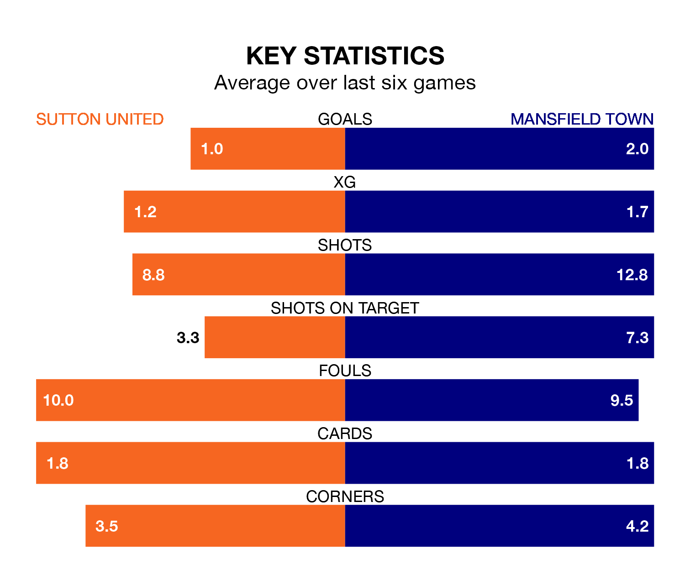

Mid-season relegation candidates Sutton United face a challenge against high-flying Mansfield Town at the VBS Community Stadium on Saturday.
Sutton United are rooted to the bottom of the EFL League Two table, and have picked up three wins and five draws in their 21 games to date.
The Stags, meanwhile, are fourth in the standings with 39 points, having won 10 and drawn nine of their first 20 matches, and are seven points behind table-toppers Stockport County.
With 37 goals in 20 games so far this season, Mansfield are scoring more than average in the league with 1.9 goals per game. And they are conceding fewer than average, letting in 18 goals at a rate of 0.9 per game.
Sutton, meanwhile, are below average scorers, with 1.2 goals per game, compared to a league average of 1.5. They have conceded 2.3 goals per game.
In Christy Pym, Town can rely on one of the league's safest pair of hands. He has kept seven clean sheets in his 20 appearances this season in EFL League Two.
In United's net, Dean Anthony Bouzanis has one clean sheet in 13 games. He has conceded a goal every 42 minutes, more than twice as often as the 106 minutes between goals for Pym.
The Us are in mixed form in EFL League Two, with one win and four draws from their last six games.
With four wins and a draw over that period, the Stags's form is much better – they have taken 13 points from 18, compared to the home team's seven.
Sutton's last match was on December 16, a 8-0 loss against Stockport County.
Mansfield beat Crawley Town 3-1 last time out, also on December 16, with Baily Cargill, Davis Keillor-Dunn and George Maris on the scoresheet.
Saturday's match will be refereed by Alex Chilowicz, who is taking charge of his first EFL League Two game this season.
He is yet to oversee a match featuring either Sutton or Mansfield this season.
Updated: 12:43, 20/12/23